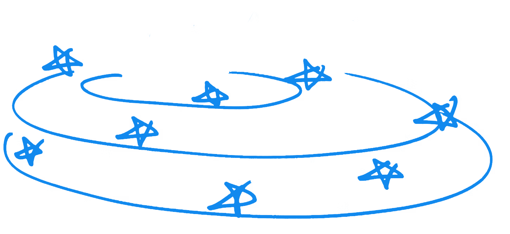
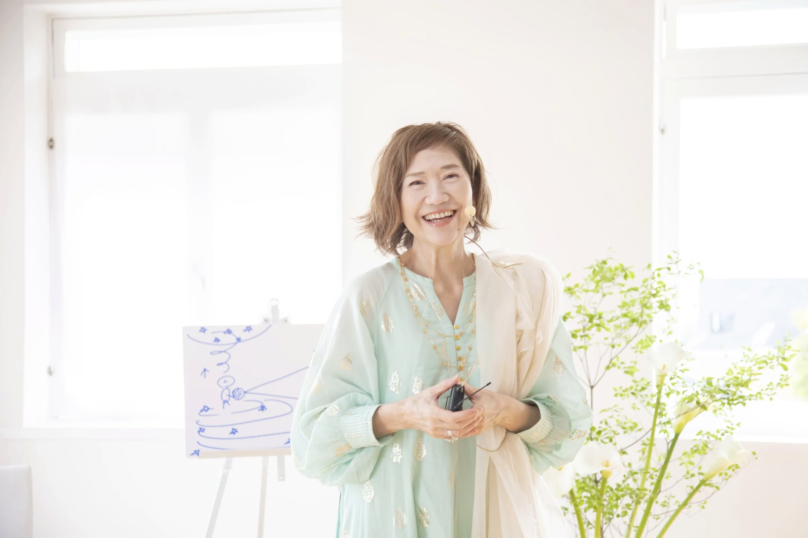

Leadersグループクラス
少人数のグループクラス
全5回（月1回ペース）
変革に同意した意識たちと
全体で ひとりでは到達できない
意識の次元へ
日程は 近日ご案内します

今世 じぶんの中を 1つにし
ほんとうのじぶんに
もともとの 平和で パワフルな
空のように高い意識に 復活していく
そして この惑星に
かつてない
あたらしい平和調和の文明を 築いていく
それは 地球にはじめて起こる
惑星の変革🌕
じぶんという
意識の変革✨
それを成し遂げるために
今世 肉体をもって
この地球に降り立った
宇宙時代のリーダーたちのためのクラス
三次元 物理次元を
もう やりきった意識たちが
じぶんの中を1つにしていくことに
すべてのフォーカスを向け
そのじぶんの宇宙意識で 地球を生きる
クラスでは
じぶんでも気づいてなかった 古い生き方に
スポットライトが当たり 光が当たり
ますます 分離を終えて
じぶんに力を戻していく
もともとの 光として
この惑星で存在していく
復活する意識から蘇ってくる
1番のワクワクのビジョン
これまで使えなかった 4次元の叡智を使い
かつて到達したことがない
あたらしい文明を 起こす1人として生きる
そのための 時空です
変革に同意した意識たちが集まる
少人数のグループクラス
そこで光が当たり 全体で
ひとりでは到達できない 意識の高さへと
ありえない加速で 上昇していく
そこに マンツーマンの個別セッションが加わり
ひとりひとりが ダイレクトに扉をあけ
意識の変革を 一直線に進んでいきます

全5回（月1回ペース）
変革に同意した意識たちと
全体で ひとりでは到達できない
意識の次元へ
日程は 近日ご案内します
全3回
関野あやこさんによる
あなただけにフォーカスした 3回の個別セッション
リアル会場で受講できます
会場：鎌倉パークホテル ／ 葉山スタジオ
オンラインで受講できます
リアル受講をご希望の場合は
スポット参観の料金にてご参加いただけます

1987年、高次元の存在バシャールとの
コンタクトが始まる。
夢の次元をとおして触れた惑星エササニで
体験したのは、溶けてしまうような平和と、
すべてがひとつに調和した時空間。
それが、じぶんの宇宙意識であることを、
深いところから思い出していく。
以来、よみがえった宇宙の感性と叡智をつかい、
それまで地球になかった角度のクラスを、
日本と海外の多くの意識へ届けつづけている。
日程・定員などの詳細は、
決まり次第、このページでお知らせします。